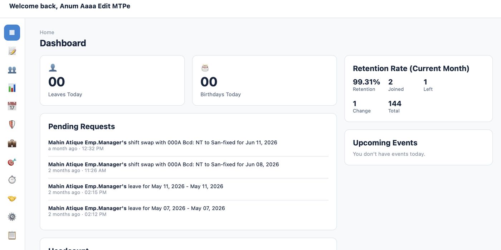

Sunesis
AI-enabled LMS — learner onboarding chatbot, AI feedback engine, at-risk flagging, and a personalized learning path generator, built for a multi-tenant training operations platform.
The AI roadmap covered 14 possible features across the client's wishlist. I scoped the MVP to 4 — onboarding, feedback, at-risk flagging, and path generation — and sequenced the remaining 10 into a phased roadmap, so go-live wasn't held hostage to feature completeness.
- Led the PRD and product-plan exercise: 1 master plan + 7 part-level PRDs, translated from the client's Excel MVP scope and AI R&D workbooks
- Built the board presentation (report + deck) that got the AI roadmap approved for phased delivery
- Coded the interactive prototype itself, used in client review sessions ahead of engineering handoff

RedRock LMS
Learning management dashboard — course structure, tracking, and reporting — built for the same client relationship as Sunesis.
Rather than treat this as a net-new engagement, I scoped it against what the client already trusted from Sunesis — same review cadence, same stakeholder group — to keep discovery short and protect the relationship's momentum.

StokkedPro
Multi-brand, multi-branch inventory dashboard with OCR-based invoice automation and confidence-score routing.
Not every scanned invoice needs a human. I designed the routing so only low-confidence OCR extractions get flagged for manual review — full automation where the model is sure, a human check only where it isn't.

Quantum DCMS
Sports-data contract management dashboard — automated event mapping and client reporting by geography, sport, and deal.
Account teams needed to answer "who owns this deal, and what's it worth" without pulling in a data analyst every time. I structured the dashboard around three relationship types — rights holders, sponsors, broadcasters — as first-class filters rather than buried report parameters.

Beneple (BSTG)
Modernized HRIS dashboard — employee lifecycle management spanning onboarding, salary, recruitment, and training.
With onboarding, recruitment, leave, and insurance all competing for the first release, I sequenced employee-facing self-service workflows ahead of deeper analytics — adoption first, reporting depth second.